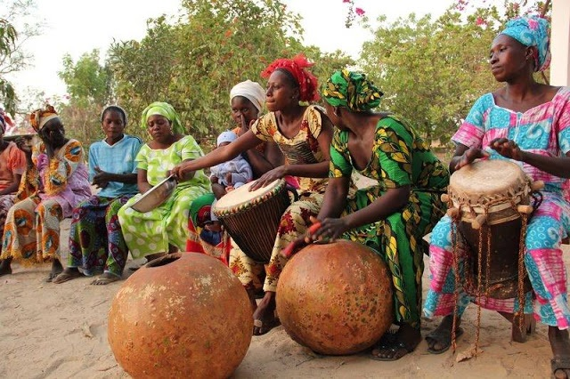

La culture lebou
Les Lébous constituent une communauté au Sénégal. Traditionnellement pêcheurs mais aussi agriculteurs, ils sont concentrés dans la presqu'île du Cap-Vert (Dakar) qu'ils occupent déjà à l'arrivée des premiers colons dans la région. Ils parlent wolof depuis les origines. Ils sont d'origine wolof.C'est par son ndeup et goumee qu'on reconnait la culture LEBOU
La culture Serere
Les Sérères sont la 3 ème ethnie sénégalaise en matière de nombre. Ils sont souvent originaires du Sine-Saloum ou de la petite côte. C'est un peuple riche en culture notamment par leur musique traditonnelle mais aussi la lutte traditionnelle.
La culture Diola
La culture diola est caractérisée par le respect sacré des valeurs ancestrales. Leur sens aigu de la liberté et leur besoin de référence par rapport à leur identité ont été les racines de leur évolution historique propre. Ils se reconnaissent par le Bois Sacré

Si l'occasion se presente allez au carrefour des cultures et reflet du charme à la senegalaise: Saint louis de la-bas vous gouterez le bon thieboudieune et voir les Signares